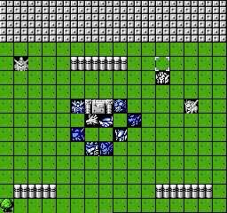
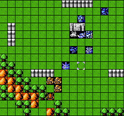
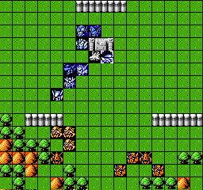
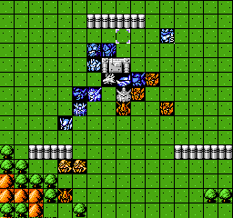
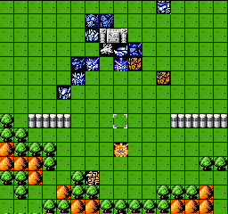

第十三关
这关差点搞死人，少年，切记下面2个BOSS只能打死阿奇波尔德，否则剧情无法正常触发。
兵分两路，利用双击和SL，3回合低损耗解决6个小兵

4回合该回血的回血，左下角的敌人也过来了，拉到射程里给他打。

5回合站位如下

6回合站位如下，打boss的时候爱心无用，干扰有用，所以留着干扰打boss，爱心打小兵。

伯利要解决掉，3个小的解决掉一个，小的都死了，飞龙改会打BOSS自杀，少年，重头再来。
boss走到这里后，下回合敌方增援，3个干扰用出去，坚持到12回合结束就过关了。
